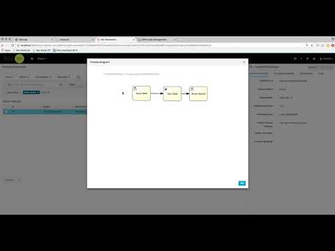
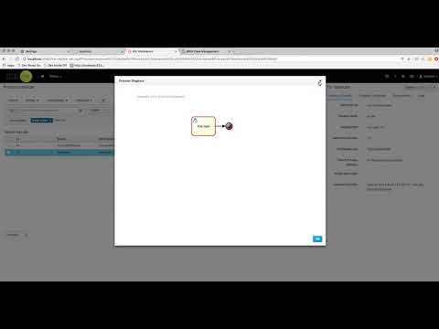

Sub cases for case instance and … process instance
Let’s take a look at what case is – or to be more precise, a case definition. Case definition is set of activities that might happen while the case instance is active. It is completely dynamic and thus what’s in the definition is not the only activities that might be invoked in case instance. Dynamic activities can also be included on runtime (on already active case instance).
Case instance, is a single instance of case definition and thus should encapsulate given business context. All case instance data is stored in case file which is then accessible to all process instances that might participate in the given case instance. Each case instance is completely isolated from other and same applies for case file. Only owning case instance can access case file.
So with that short recap of case terminology let’s take a look at sub cases. Sub case is another case definition that is invoked from within another case instance (or even regular process instance). It has all the capabilities of regular case instance:
- has dedicated case file
- isolated from any other case instance
- its own set of case roles
- its own case prefix
- etc
- CaseDefinitionId – mandatory case definition id that should be started
- DeploymentId – optional deployment id (container id in context of kie server) that indicates where the case definition (that should be started) belongs to
- Independent – optional indicator that tells the engine if the case instance is independent and thus main case instance will not wait for its completion – defaults to false
- DestroyOnAbort – optional indicator that tells engine how to deal when the sub case activity was aborted – cancel case or destroy – defaults to true (will destroy the sub case – remove case file)
- Data_XXX – optional data mapping from this case instance/process to sub case, where XXX is the name of the data in sub case this mapping should target. Can be given as many times as needed
- UserRole_XXX – optional user to case role mapping. this case instance role names can be referenced here – meaning an owner of main case can be mapped to an owner of the sub case that way whoever was assigned to main case will be automatically assigned to sub case, where XXX is role name and value is the user role assignment
- GroupRole_XXX – optional group to case role mapping. this case instance role names can be referenced here – meaning a participants of main case can be mapped to participants of the sub case that way whatever group was assigned to main case will be automatically assigned to sub case, where XXX is role name and value is the group role assignment
- DataAccess_XXX – optional data access restrictions where XXX is the name of data item and the value is access restrictions.
- CaseId – this is the case instance id of the sub cases after it was started.



{kind=link}
{kind=link}